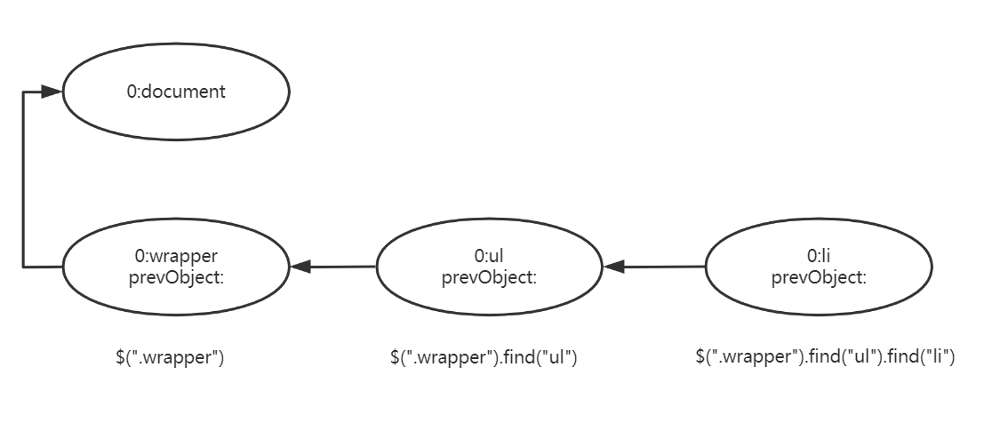

一、进一步选择元素的方法
- .get()：从jQuery对象中拿出原生dom
参数：
数字，正数表示从前往后数第几个dom结点，负数表示倒数第几个dom结点
空，null，undefined，输出一个原生dom的数组
- eq()
两种形式
$(".demo").eq(0),$(".demo:eq(0)"),他们在效果上是相同的，但是第一种符合jQuery的精髓–链式操作，更加灵活返回值是jQuery对象
实现该方法的原码最简单的方式就是用
get()得到的dom结点外边包上$()，让dom结点变成jQuery对象
- .find()
在原有的基础上往下查找，与.eq()相比，大大的提高了查找的效率
用该方法找到的对象里面有一个非常重要的属性，prevObject，它指向了前一个用该方法查找到的jQuery对象，经常利用prevObject属性在jQuery链式操作中做回退操作
prevObject图示：

思考：
console.log($(".wrapper").find("ul").find("li").prevObject == $(".wrapper").find("ul"));输出false原因：
"=="左右两边的$(".wrapper")是一个索引值，虽然内容相同但是索引值是不同的，通过prevObejct找到的是索引值，所以是false
- .filter()：返回符合一定条件的原生的dom结点
参数：CSS selector、jQuery selector、function等
.filter(function(index,elem){console.log(index,elem,this)})this指的是elem，该方法的强大功能体现在function上
- .has()
$("li").has("ul")选择拥有后代元素是ul的li元素
- .is()
判断前面选中的元素里面包没包括用
.is()选中的元素，是返回true，否返回false官方解释：前面选中的元素与用
.is()选中的元素的交集例：
$(".demo").is(".p")判断用.demo选中的元素中有没有哪个元素的class值还含有p，如果有这样的元素，返回true，否则返回false
- .add()
- 集中操作，将.add()选中的元素和前面的元素集中在一起做某种操作
- .end()
- 回退操作